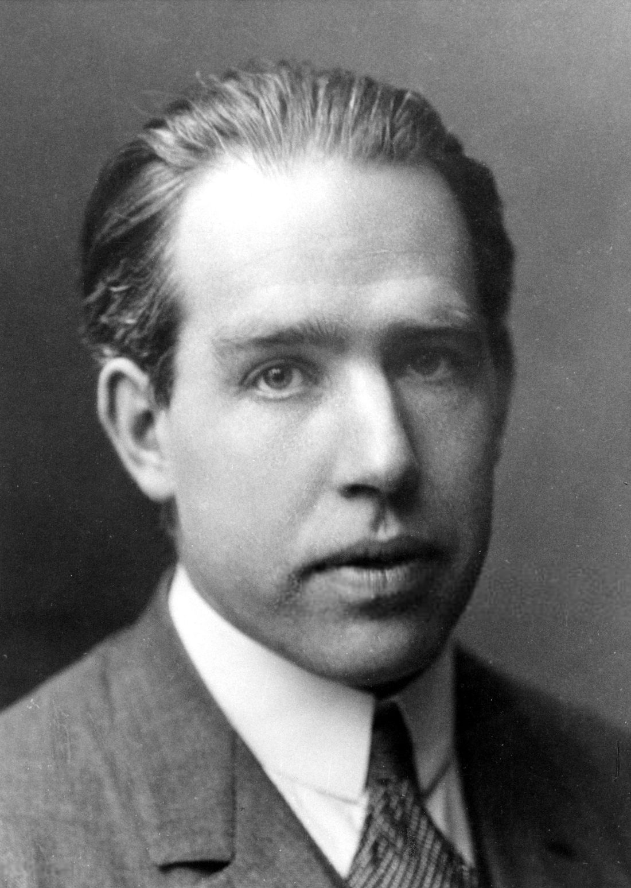

尼尔斯·玻尔（1885—1962），丹麦物理学家。他在 1913 年提出“玻尔模型”，把普朗克的量子思想用到了原子结构上。
他创立的哥本哈根学派，是量子力学的思想中心；他与爱因斯坦关于“上帝是否掷骰子”的辩论，至今仍是科学哲学的典范。
二战期间他辗转逃出纳粹占领的丹麦，参与原子弹研究；战后他奔走呼吁科学开放合作，是 CERN 的精神先驱之一。
面向中学生的科普小站：按时间顺序讲故事，把难词讲成人话。每个核心概念都能点开弹窗看通俗解释；想深入就读“详解页”；想动手就玩“实验”；不确定哪个词什么意思，去词典里搜。